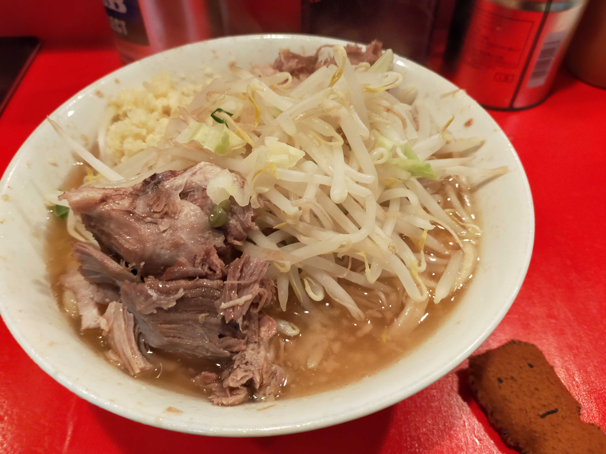

これは？
二郎に興味があるけど注文が難しそうだから行ったことがないという人のための記事です。店舗によって勝手が違うらしいので府中店以外は張り紙や雰囲気を読んで頑張ってください。

手順
- 待機列の後ろに並ぶ。
- 列の先頭(ドアの内側)になったら食券を買う。
- ラーメンの種類(「小？」)を聞かれるので答える。(聞かれない時もあるらしい)
- 席が空きそうな予感がしたらティッシュを必要枚数と水を取っておく。(たぶんこれがスマート)
- 席が空いたら座って食券を棚の上に置いて店員に渡す。
- 待つ。
- オプション(「ニンニク入れますか？」)を聞かれるので答える。
- 食べる。
- 食べ終わったら丼を棚に上げて台拭き(棚の上にある)で机を拭く。
- 退店。
オススメ注文
量が多いので最初は少なめで頼んで胃袋の容量とすり合わせをした方がいいです。
- 小ラーメン
- ヤサイ少なめニンニクあり
その他
- 店内の撮影は禁止。(ラーメンの写真のみOK)
- 食い切れなかったら退店の際に店員に一言謝って次回は量を減らす(麺少なめもできるらしい)かもっと腹を減らして再トライしましょう。
天地返し
麺を引きずり出してヤサイの上に置く動作のこと。麺の伸びを防ぐのとヤサイに味を付ける効果がある。